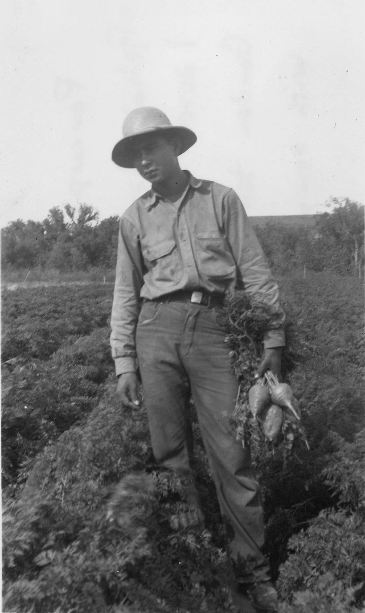

Who Advocates Matters
専門性と発信力をあわせ持つ人の、マネジメント会社です。
誰が薦めるかで、
伝わり方は変わる。
AI に聞けば、たいていの知識はすぐに手に入るようになりました。
同じ情報が行き渡るほど、受け取る人は、その言葉を誰が、どんな経験にもとづいて伝えているかを手がかりにします。
AI は答えを示せても、経験と名前で言葉を引き受けることはできません。
Advocates は、その「誰が」を担う人と仕事をします。
〇〇 × インフルエンス
〇〇 に入る分野の例
料理人 × インフルエンス。Advocates が仕事をするのは、資格や実務経験で確かめられる専門性と、それを届ける発信力を、両方持つ人です。
例：調理器具や食材を、毎日厨房に立つ人の基準で紹介できます。
- 料理人 × インフルエンス
- 調理器具や食材を、毎日厨房に立つ人の基準で紹介できます。
- 建築家 × インフルエンス
- 住まいの設備や家具を、設計する人の目で紹介できます。
- 写真家 × インフルエンス
- カメラや撮影機材を、仕事で使う人の基準で紹介できます。
- 職人 × インフルエンス
- 道具や素材を、手で扱ってきた人の基準で紹介できます。
- 農家 × インフルエンス
- 食材や農具を、育てる人の目で紹介できます。
- パイロット × インフルエンス
- 旅行や移動のサービスを、空の仕事を知る人の目で紹介できます。
〇〇 に入る分野は限りません。ここに挙げたのは、その例です。
専門家の言葉で、
商品を伝える。
広告代理店と事業会社の方から、ご相談を受けています。所属タレントとは、たとえば次のような形で仕事ができます。
-
PR 投稿
専門分野の視点で商品やサービスを試し、広告であることを明記して SNS に投稿します。
撮影者（メルボルン、1940年代） -
アンバサダー
長期の契約で、商品やブランドを続けて伝えます。
料理人（ニューヨーク、1942年） -
監修
商品の企画や記事の内容を、専門家の立場で確かめます。
パイロット（米国、1943年ごろ） -
出演
発表会、セミナー、番組や記事に、専門家として出演します。

農家（米国、1940年ごろ） -
共同開発
専門家の知見を、商品の企画の段階から活かします。
設計室（米国財務省の建物）
-
所属について。まず、話を聞きます。
所属をご検討の方は、Advocates からの連絡への返信か、ページ下のメールアドレスでご相談ください。所属を決める前の相談で構いません。
-
次に、条件を伝えます。
支援の内容と契約の条件は、面談でお伝えします。
-
案件は、一緒に選びます。
専門家としての信用を損なうおそれのある案件は、引き受けません。
-
事務は、任せてください。
契約書の確認、請求と入金の管理、投稿内容の確認は Advocates が担います。本業を続けながら発信できます。
広告表示の方針
広告表示の方針。広告であることを隠さない、「#PR」などの表記を入れる、投稿の前と後に確かめる、信用を損なう案件は受けない。
景品表示法のステルスマーケティング規制（2023年10月1日施行）に沿って進めます。広告表示に関する方針
Advocates からの
お知らせ
Advocates からのスカウトや連絡は、@advocates.jp のメールアドレスから行います。Advocates を名乗る連絡で気になる点があれば、Contact@advocates.jp までお知らせください。
| 日付 | 種類 | 内容 |
|---|---|---|
| 2026.11.04 | お知らせ | advocates.jp を公開しました |
| 2026.11.04 | 方針 | 広告表示に関する方針を公開しました |
| 2026.11.04 | ご注意 | Advocates を名乗る連絡について |